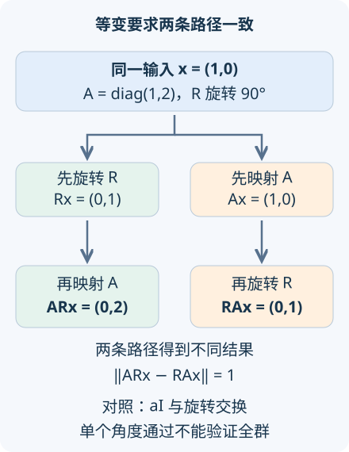

AI 研究 03 · 等变网络：把坐标变化写进模型的规则
问题：把一个分子整体转动，模型预测的能量与力应该各自怎样变化？先修：神经网络、向量与矩阵。资料核查截至 2026-09-08；实验精确检验二维线性映射，研究讨论延伸到图网络与原子模型。
1. 相同物体，数字却换了一套
在没有外部方向场的理想条件下，孤立分子的整体转动不改变能量。但力是有方向的向量：分子转动后，每个原子的力也应同样转动。如果把二者都叫“旋转不变”，就会抹掉预测目标之间的差别。
用群 \(G\) 表示允许的变换及其组合。\(\rho_{\rm in}(g)\) 作用于输入，\(\rho_{\rm out}(g)\) 作用于输出。模型 \(f\) 的等变条件是
标量能量的输出作用是恒等映射，条件退化为不变性；向量力的输出作用则是旋转矩阵。群作用必须先定义清楚，不能只说“用了几何特征，所以具有物理对称性”。

2. 算一个不满足等变的网络层
设输入 \(x=(1,0)^T\)，旋转矩阵为
这个层沿横向不变、纵向放大 \(a\) 倍。直接计算两条路径：
因此交换误差为 \(\lvert a-1\rvert\lvert\sin\phi\rvert\)。取 \(a=2,\phi=90^\circ\)，误差就是 1；取零度却看不出任何问题。检查一个特殊角度并不能检验全部对称性。
作为对照，\(aI\) 与每个旋转矩阵交换，因此线性层 \(x\mapsto ax\) 旋转等变。这只是一个充分构造，并非所有二维旋转等变线性映射的分类：如果只要求平面旋转、不要求反射，还可以有与九十度旋转相关的项。指定 \(SO(2)\) 还是整个正交群 \(O(2)\)，允许的模型就可能不同。
3. 从矩阵条件到几何消息传递
设原子位置为 \(r_i\)，节点标量属性为 \(h_i\)。考虑更新
括号内位移是向量，\(\psi\) 输出标量。若全体位置变为 \(Qr_i+t\)，其中 \(Q^TQ=I\)，距离平方不变，位移变为 \(Q(r_i-r_j)\)，所以整个右侧变成 \(Qr'_i+t\)。这逐项给出了旋转、反射及平移的等变证明。
证明有条件：节点属性需要按标量规则处理；邻接关系应在变换下保持对应；求和必须与节点重编号兼容。按不变距离建图可满足这一点，按“全局横坐标最近”的规则连边一般不满足。若输入含方向属性，就需赋予正确的表示，不能把向量三个分量当成三个独立不变标量。
EGNN，首稿 2021-02-19体现了这种利用距离与相对位移构造更新的思路。群等变卷积网络，首稿 2016-02-24则展示如何通过群结构设计共享参数。架构保证减少需要从样本中重复学习的坐标变化规律，但仍需学习真实的相互作用。
4. 为什么逐坐标激活需要小心
对普通标量通道使用非线性通常没有问题；对向量坐标分别做 ReLU 却会破坏旋转规则。例如 \(x=(-1,0)\) 经过 ReLU 得到零，而先旋转半周变成 \((1,0)\)，再 ReLU 得到原向量。两条路径不同。
一个替代构造是 \(f(x)=g(\|x\|^2)x\)：长度平方不变，标量门控不改变向量的变换方式，所以对任意正交变换等变。多种表示之间的非线性耦合更复杂，需要检查张量积、收缩或门控是否保留指定表示。漂亮的向量图并不能代替这项代数检查。
物理任务也未必拥有假设中的完整群。如果存在固定重力 \(g\)，只旋转物体而不旋转重力，是改变了物理情境，而不是单纯换坐标。可以把 \(g\) 也作为会变换的输入，或者只要求保持该方向的子群对称。类似地，边界、晶格、手性与外电场都可能缩小对称群。
5. 前沿问题已经超过“是否等变”
Information Routing in Atomistic Foundation Models，首稿 2026-03-03研究任务目标与等变结构怎样影响原子基础模型中信息的线性可读性。这里线性探针读得出某个量，是表征分析的证据，不是该量独自造成预测的因果证明，更不是“所有等变架构必然学到同一物理概念”的定理。
专业评估至少分三层：数值上是否遵守声明的变换规则；在留出的分子或材料上是否预测准确；动力学滚动中是否稳定。对称性不能单独保证能量守恒，也不能保证预测力来自某个势能。若定义 \(F_i=-\nabla_{r_i}E\)，可把保守力结构写进模型，但仍需处理光滑性、截断邻域和数值积分误差。
训练时做旋转数据增强，与架构等变也有区别。增强要求模型在有限的变换样本上拟合一致关系；架构约束则在精确算术和成立条件下对整个指定群强制该关系。工程中的浮点误差、截断邻域和排序规则仍可能破坏实现，所以二者都应做数值检查。可为同一结构采样多种旋转，比较标量误差与向量旋转后的误差，并把靠近邻接阈值的情况单独测试。模型若只在坐标轴方向表现良好，平均测试可能掩盖这一弱点；报告最大偏差通常比只报告平均偏差更能发现结构实现问题。
默认 \(a=2,\phi=90^\circ\)，两条路径分别得到 \((0,2)\) 与 \((0,1)\)，误差为 1；\(aI\) 对照误差为零。把角度改成 180 度，当前反例也恰好为零。请用这一点解释为什么随机和结构化测试需要互补。
6. 迁移练习
题一：预测分子总能量时把所有原子重编号，输出应不变还是同样重排？预测每个原子的力呢？
展开答案
总能量是一个标量，对重编号应不变；逐原子的力列表应按同一置换重排。这是不同的输出群作用。仅对节点特征求和可形成不变读出，但逐节点预测需要保留对应关系。
题二：一个模型在任意旋转下都预测零力，是否已经解决原子力预测？
展开答案
零向量满足等变条件，却可能处处不准确。等变是结构约束，损失与独立数据检验物理拟合。还应检查能量梯度关系及随时间累积的误差，避免把一个必要的合理性条件当成充分的成功证据。
速查摘要
| 对象 | 条件 |
|---|---|
| 等变 | \(f\rho_{\rm in}(g)=\rho_{\rm out}(g)f\) |
| 不变标量 | 输出群作用为恒等 |
| 实验反例 | \(A=\mathrm{diag}(1,a)\)，误差 \(\lvert a-1\rvert\lvert\sin\phi\rvert\) |
来源：群等变卷积、EGNN、2026 原子表征研究。先修：算子学习；下一讲：模拟推断。